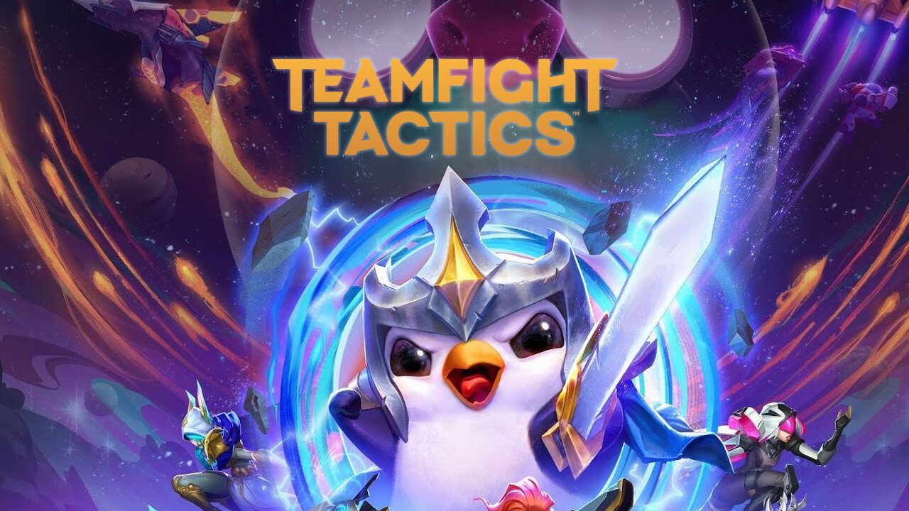

En el League of legends existen distintos modos de juego divertidos y entretenidos para poder pasarla bien con amigos
Los cuales son:
Abismo de los Lamentos
Abismo de los Lamentos es el campo de batalla y ARAM es el acrónimo del modo de juego, que en español significa "todo aleatorio y en la calle central" ("All Random, All Mid"). Pensad en ello como en un combate sin restricciones en una sola calle entre dos equipos de 5 jugadores. Preparaos mientras se asigna un campeón aleatorio para este vertiginoso modo de juego repleto de refriegas.
Teamfight Tactics
Teamfight Tactics, desarrollado y editado por Riot Games para PC y dispositivos iOS y Android, es un modo de juego de League of Legends basado en el estilo auto chess. TFT es un juego de estrategia por turnos en el que te enfrentarás a siete oponentes en una competición por crear un poderoso equipo que peleará por ti
Modo arena
El Modo Arena es un modo de juego único presentado como parte del Evento de Verano 2023 de Riot. En el modo Arena, en lugar de los partidos habituales de 5 contra 5, hay cuatro equipos. Cada equipo tiene dos jugadores. Luchan en rondas y el juego continúa hasta que solo queda un equipo

Frenesi del nexo
Frenesí del Nexo o Nexus Blitz es el modo de juego temporal de League of Legends que nos lleva por una emocionante partida donde cualquier cosa puede pasar. En la partida puede tocarte matar a un Teemo gigante, enfrentarte en duelos solitarios y hasta mini sesiones de URF en equipo